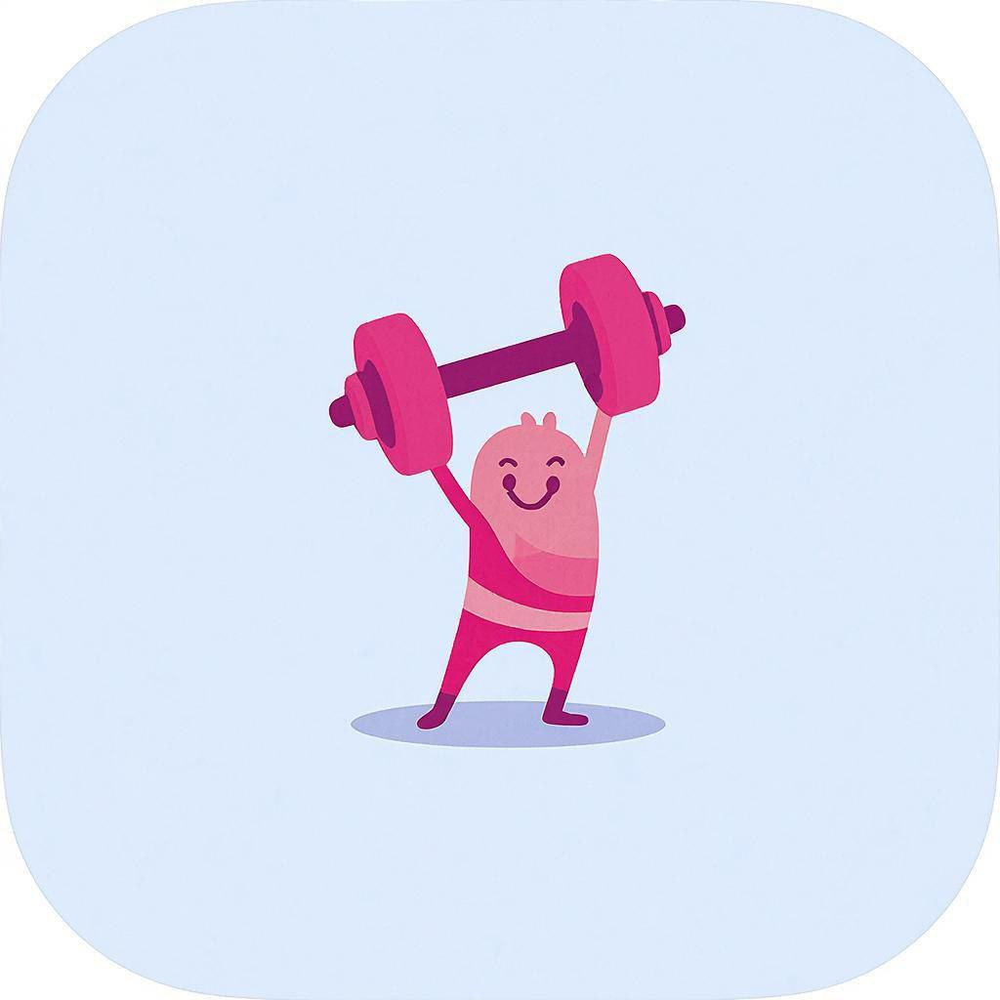

1
Загрузка PDF
Пользователь добавляет лабораторный бланк в PDF и при желании задаёт уточняющий вопрос.
Бот объяснит показатели простым языком, выделит то, что в норме и вне референса, а затем подскажет, что стоит обсудить с врачом и где может быть уместна мягкая поддержка микробиоты.


Здесь пользователь загружает PDF и получает ответ в стиле человеческого объяснения, а не сухой лабораторной таблицы.
Пользователь добавляет лабораторный бланк в PDF и при желании задаёт уточняющий вопрос.
Сервис читает таблицу анализа и выделяет показатели, референсы и ключевые отклонения.
Бот отвечает простыми словами: что в норме, на что обратить внимание и что обсудить с врачом.
Если это уместно, бот деликатно объясняет, где продукты LactoMi могут быть поддержкой, а не лечением.
На сайте информация короткая и понятная, а в самом ответе бот раскрывает детали по загруженному анализу.
Главные защитники слизистой. Снижение может говорить об ослаблении барьерной функции кишечника.
Важная часть нормофлоры. Участвуют в ферментации клетчатки и поддержке иммунного ответа.
Допустима в определённых пределах. Избыток может сопровождаться брожением, вздутием и дискомфортом.
Один из главных противовоспалительных маркёров. Связан с выработкой масляной кислоты.
Связана со здоровьем слизистого барьера и метаболическим профилем организма.
Участвуют в переработке сложных углеводов. Важен не только уровень, но и соотношение с другими бактериями.
Допустимы в небольших количествах, но при избытке требуют более внимательного отношения.
Если обнаружены условно-патогенные или патогенные микроорганизмы, бот делает на этом отдельный акцент.
На сайте продукт подаётся спокойно: сначала человек получает понятную расшифровку анализа, а уже потом видит, где может быть уместна поддержка микробиоты с помощью решений LactoMi.
Это не лекарство и не замена консультации врача. Правильная роль продукта здесь — сопровождение, а не обещание лечения.
Нет. Бот помогает понять бланк анализа понятным языком, но не ставит диагноз и не назначает лечение.
В этом MVP лучше всего работают PDF анализов микробиоты с нормальным текстовым слоем.
Нет. Проект подготовлен под Cloudflare Pages и бесплатные возможности Cloudflare без классического бэкенда.
Да, для MVP — да. Но у бесплатных тарифов есть лимиты по трафику и AI-использованию.